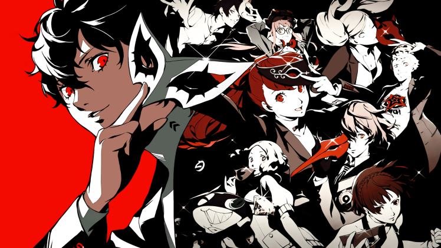

Descubren una beta de Persona 5 que alteraba algunas de las claves de la versión final
Data de 6 meses antes de su lanzamiento en Japón y cuenta con algunos cambios alterados interesantes, como la música.
Una subasta ha sido el origen de un descubrimiento relevante para los aficionados de Persona 5. Un usuario del discord HiddenPalace ha conseguido hacerse con un total de 20 discos, cuyo interior escondían una versión en desarrollo de la obra maestra de Atlus. La build que ofrece data de alrededor de 6 meses antes de su lanzamiento final en Japón (15 de septiembre de 2016) una beta que arroja luz sobre cómo iban a ser algunas cosas. Si no te has pasado el juego te recomendamos que dejes de leer a partir de aquí. The person who dumped it is on the Hidden Palace (https://t.co/SXovZrNPXH) discord, this seems to have come from a lot of 20 discs sold in a private auction. Sadly it looks like most of the discs were too damaged to be dumped, according to the owner at least. pic.twitter.com/fzPRNR8PUY — Maple Hinata (@Maple___s2) January 19, 2024
¿Qué cambios tenía Persona 5 en su versión beta?
De acuerdo a la información que está trascendiendo a través de X (antiguo Twitter), los cambios aparecían desde el mismo momento en el que se ejecutaba el opening del juego. La versión de la canción ‘Wake Up, Get Up, Get Out There’ es sensiblemente diferente ahí, tanto en el número de instrumentos que intervienen como en la artista que la cantaba.
Lo mismo ocurre con otros temas icónicos durante el juego. ‘Last Surprise’, la canción de combate, tenía un pequeño cambio de melodía, al mismo tiempo que prescindía de la vocalista. Por otro lado, ‘Rivers in the Desert’, que acompaña al final del juego, tampoco tiene interpretación. Esta versión parece una versión retro de la definitiva.
La resurrección de Ryuji tras su acto heroico en el último palacio del original tuvo un resultado mucho más contundente cuando se destapó que estaba vivo. Todos los personajes del grupo hacían fila para abofetearle tras el tremendo susto que les había dado. Desternillante.
El primer día de Joker bajo el amparo del Leblanc sería un pelín diferente. Al dejar los callejones donde se encontraba la cafetería íbamos a recorrer un pequeño trozo de mapa donde aparecían edificios de la fotografía que todos tenemos en la mente de Tokio. Finalmente se desechó.
La versión beta del tema ‘A Woman’ era bastante más lúgubre que la que pudimos escuchar finalmente en el Palacio de Madarame, el museo retorcido de este tramposo genio.